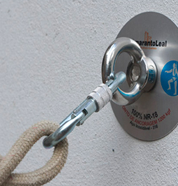
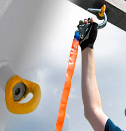
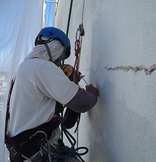

Nosso
Plano
Manutenção Industrial e Predial Alpinismo Bahia Pentagono
Manutenção Industrial e Predial Alpinismo Bahia
A Pentagono Alpinismo realiza manutenção Industrial assim como Manutenção predial realiza reparos gerais em difícil acesso e realiza manutenção preventiva dos sistemas e equipamentos. Nosso setor de manutenção é focado em ajudar a manter um ambiente seguro, também belo e valorizado. Nosso departamento de manutenção industrial prioriza o trabalho com a missão de uma execução perfeita com tempo hábil salvo situações de extremo risco onde sempre priorizamos o cuidado e a perfeita entrega do serviço. A manutenção predial é importante e valoriza a empresa ou imóvel.
Realizamos serviços em todo o País. Temos um leque com uma variedade de serviços como manutenção e reparação. Colaboradores responsáveis e muito bem treinados, a nossa equipe de manutenção industrial é aplicada e apresenta soluções em múltiplos ambientes.
Segurança e garantia em manutenção industrial
Os serviços de manutenção industrial da Pentagono são pensados para grandes e complexas estruturas que necessitam de atenção especial. Regido por engenheiros de manutenção, garantimos agilidade e segurança na execução da manutenção predial.
Serviço de manutenção predial em todo o País
Fazemos Manutenção Preventiva em altura e fazemos reparos em edifícios inclui canalização, iluminação, elétrica e sistemas estruturais em edifícios. Reparos de grande escala são executadas por área.
A Pentagono Alpismo é acostumada a realizar trabalhos em grande escala como em complexos industriais e também manutenção em manutenção em torre eólica em Bahia.
O alpinismo predial em Bahia é uma solução para a manutenção preventiva ou ostensiva em lugares de difícil acesso a desde faixadas, prédios inteiros até grandes complexos industriais. É sabido que até o poderoso aço requer manutenção, o tempo e a deterioração são um problema em complexos com áreas de acesso restrito ou difícil, uma simples manutenção predial em Bahia pode sanar problemas como infiltrações e conseguintemente deterioração da estrutura.
O alpinismo industrial em Bahia é uma pratica que é exercida para solucionar necessidades de manutenção, pintura, resgate ou limpeza em altura difícil acesso e com riscos. Quando uma empresa presta serviços em altura é importante solicitar seus certificados para que só assim a contratante se garanta legalmente em caso de problemas.
Treinamentos
-
Segurança
Segurança sempre deve vir em primeiro lugar, uma vida é um bem precioso insubstituível, que devemos manter em primeiro lugar.
-
Destreza
Profissionais treinados para manutenção industrial em Bahia para que erros sejam minimizados e só assim a empresa contratante fica segura que será realizado com a máxima eficácia seja uma manutenção ou reparo, lembrado que acidentes em caso de uma empresa não ser regulamentada acarretará em sérios prejuízos para a contratante.
-
Capacidade
Pentagono alpinismo industrial apenas trabalha com colaboradores exaustivamente treinados e reciclados, apenas assim garantindo a aptidão e destreza de nossos serviços em altura.- Abaíra
- Abaré
- Acajutiba
- Adustina
- Água Fria
- Aiquara
- Alagoinhas
- Alcobaça
- Almadina
- Amargosa
- Amélia Rodrigues
- América Dourada
- Anagé
- Andaraí
- Andorinha
- Angical
- Anguera
- Antas
- Antônio Cardoso
- Antônio Gonçalves
- Aporá
- Apuarema
- Araças
- Aracatu
- Araci
- Aramari
- Arataca
- Aratuípe
- Aurelino Leal
- Baianópolis
- Baixa Grande
- Banzaê
- Barra
- Barra da Estiva
- Barra do Choça
- Barra do Mendes
- Barra do Rocha
- Barreiras
- Barro Alto
- Barro Preto
- Barrocas
- Belmonte
- Belo Campo
- Biritinga
- Boa Nova
- Boa Vista do Tupim
- Bom Jesus da Lapa
- Bom Jesus da Serra
- Boninal
- Bonito
- Boquira
- Botuporã
- Brejões
- Brejolândia
- Brotas de Macaúbas
- Brumado
- Buerarema
- Buritirama
- Caatiba
- Cabaceiras do Paraguaçu
- Cachoeira
- Caculé
- Caém
- Caetanos
- Caetité
- Cafarnaum
- Cairu
- Caldeirão Grande
- Camacan
- Camaçari
- Camamu
- Campo Alegre de Lourdes
- Campo Formoso
- Canápolis
- Canarana
- Canavieiras
- Candeal
- Candeias
- Candiba
- Cândido Sales
- Cansanção
- Canudos
- Capela do Alto Alegre
- Capim Grosso
- Caraíbas
- Caravelas
- Cardeal da Silva
- Carinhanha
- Casa Nova
- Castro Alves
- Catolândia
- Catu
- Caturama
- Central
- Chorrochó
- Cícero Dantas
- Cipó
- Coaraci
- Cocos
- Conceição da Feira
- Conceição do Almeida
- Conceição do Coité
- Conceição do Jacuípe
- Conde
- Condeúba
- Contendas do Sincorá
- Coração de Maria
- Cordeiros
- Coribe
- Coronel João Sá
- Correntina
- Cotegipe
- Cravolândia
- Crisópolis
- Cristópolis
- Cruz das Almas
- Curaçá
- Dário Meira
- Dias d`Ávila
- Dom Basílio
- Dom Macedo Costa
- Elísio Medrado
- Encruzilhada
- Entre Rios
- Érico Cardoso
- Esplanada
- Euclides da Cunha
- Eunápolis
- Fátima
- Feira da Mata
- Feira de Santana
- Filadélfia
- Firmino Alves
- Floresta Azul
- Formosa do Rio Preto
- Gandu
- Gavião
- Gentio do Ouro
- Glória
- Gongogi
- Governador Mangabeira
- Guajeru
- Guanambi
- Guaratinga
- Heliópolis
- Iaçu
- Ibiassucê
- Ibicaraí
- Ibicoara
- Ibicuí
- Ibipeba
- Ibipitanga
- Ibiquera
- Ibirapitanga
- Ibirapuã
- Ibirataia
- Ibitiara
- Ibititá
- Ibotirama
- Ichu
- Igaporã
- Igrapiúna
- Iguaí
- Ilhéus
- Inhambupe
- Ipecaetá
- Ipiaú
- Ipirá
- Ipupiara
- Irajuba
- Iramaia
- Iraquara
- Irará
- Irecê
- Itabela
- Itaberaba
- Itabuna
- Itacaré
- Itaeté
- Itagi
- Itagibá
- Itagimirim
- Itaguaçu da Bahia
- Itaju do Colônia
- Itajuípe
- Itamaraju
- Itamari
- Itambé
- Itanagra
- Itanhém
- Itaparica
- Itapé
- Itapebi
- Itapetinga
- Itapicuru
- Itapitanga
- Itaquara
- Itarantim
- Itatim
- Itiruçu
- Itiúba
- Itororó
- Ituaçu
- Ituberá
- Iuiú
- Jaborandi
- Jacaraci
- Jacobina
- Jaguaquara
- Jaguarari
- Jaguaripe
- Jandaíra
- Jequié
- Jeremoabo
- Jiquiriçá
- Jitaúna
- João Dourado
- Juazeiro
- Jucuruçu
- Jussara
- Jussari
- Jussiape
- Lafaiete Coutinho
- Lagoa Real
- Laje
- Lajedão
- Lajedinho
- Lajedo do Tabocal
- Lamarão
- Lapão
- Lauro de Freitas
- Lençóis
- Licínio de Almeida
- Livramento de Nossa Senhora
- Luís Eduardo Magalhães
- Macajuba
- Macarani
- Macaúbas
- Macururé
- Madre de Deus
- Maetinga
- Maiquinique
- Mairi
- Malhada
- Malhada de Pedras
- Manoel Vitorino
- Mansidão
- Maracás
- Maragogipe
- Maraú
- Marcionílio Souza
- Mascote
- Mata de São João
- Matina
- Medeiros Neto
- Miguel Calmon
- Milagres
- Mirangaba
- Mirante
- Monte Santo
- Morpará
- Morro do Chapéu
- Mortugaba
- Mucugê
- Mucuri
- Mulungu do Morro
- Mundo Novo
- Muniz Ferreira
- Muquém de São Francisco
- Muritiba
- Mutuípe
- Nazaré
- Nilo Peçanha
- Nordestina
- Nova Canaã
- Nova Fátima
- Nova Ibiá
- Nova Itarana
- Nova Redenção
- Nova Soure
- Nova Viçosa
- Novo Horizonte
- Novo Triunfo
- Olindina
- Oliveira dos Brejinhos
- Ouriçangas
- Ourolândia
- Palmas de Monte Alto
- Palmeiras
- Paramirim
- Paratinga
- Paripiranga
- Pau Brasil
- Paulo Afonso
- Pé de Serra
- Pedrão
- Pedro Alexandre
- Piatã
- Pilão Arcado
- Pindaí
- Pindobaçu
- Pintadas
- Piraí do Norte
- Piripá
- Piritiba
- Planaltino
- Planalto
- Poções
- Pojuca
- Ponto Novo
- Porto Seguro
- Potiraguá
- Prado
- Presidente Dutra
- Presidente Jânio Quadros
- Presidente Tancredo Neves
- Queimadas
- Quijingue
- Quixabeira
- Rafael Jambeiro
- Remanso
- Retirolândia
- Riachão das Neves
- Riachão do Jacuípe
- Riacho de Santana
- Ribeira do Amparo
- Ribeira do Pombal
- Ribeirão do Largo
- Rio de Contas
- Rio do Antônio
- Rio do Pires
- Rio Real
- Rodelas
- Ruy Barbosa
- Salinas da Margarida
- Salvador
- Santa Bárbara
- Santa Brígida
- Santa Cruz Cabrália
- Santa Cruz da Vitória
- Santa Inês
- Santa Luzia
- Santa Maria da Vitória
- Santa Rita de Cássia
- Santa Teresinha
- Santaluz
- Santana
- Santanópolis
- Santo Amaro
- Santo Antônio de Jesus
- Santo Estêvão
- São Desidério
- São Domingos
- São Felipe
- São Félix
- São Félix do Coribe
- São Francisco do Conde
- São Gabriel
- São Gonçalo dos Campos
- São José da Vitória
- São José do Jacuípe
- São Miguel das Matas
- São Sebastião do Passé
- Sapeaçu
- Sátiro Dias
- Saubara
- Saúde
- Seabra
- Sebastião Laranjeiras
- Senhor do Bonfim
- Sento Sé
- Serra do Ramalho
- Serra Dourada
- Serra Preta
- Serrinha
- Serrolândia
- Simões Filho
- Sítio do Mato
- Sítio do Quinto
- Sobradinho
- Souto Soares
- Tabocas do Brejo Velho
- Tanhaçu
- Tanque Novo
- Tanquinho
- Taperoá
- Tapiramutá
- Teixeira de Freitas
- Teodoro Sampaio
- Teofilândia
- Teolândia
- Terra Nova
- Tremedal
- Tucano
- Uauá
- Ubaíra
- Ubaitaba
- Ubatã
- Uibaí
- Umburanas
- Una
- Urandi
- Uruçuca
- Utinga
- Valença
- Valente
- Várzea da Roça
- Várzea do Poço
- Várzea Nova
- Varzedo
- Vera Cruz
- Vereda
- Vitória da Conquista
- Wagner
- Wanderley
- Wenceslau Guimarães
- Xique-Xique
Manutenção Predial
A limpeza de fachada em Bahia é a principal forma de manter a aparência do imóvel e desta maneira também garantindo que o mesmo seja valorizado. Esteticamente é importante mas se pensarmos economicamente é inadiável.
2023
Linha de vida
A limpeza de vidros em bahia é um serviço arriscado quando em altura, se caso não seja executado por uma empresa de referência e com colaboradores treinados. Mas no caso do pentagono alpinismo, nós conseguimos realizar tranquilamente qualquer trabalho em altura.
2023
Ponto de Ancoragem
Limpeza pós obra na Bahia, interna e externa é inevitável. Lembrando da sujeira que fica após terminar uma obra, como fuligem, resto de tintas, reboco dentre outras coisas. Um prédio por exemplo, ao ser finalizado deve ser limpo por dentro e fora para ai sim ser possível apresentá-lo para venda.
2023
Linha de vida
Linha de vida em Bahia para segurança de quem trabalha em altura. Equipamento a ser usado é preciso ter referência, e a sua instalação depende de uma mão de obra qualificada e que venha acompanhada por uma empresa referência para que tudo saia tranquilamente e sem riscos.
2023
Ponto de ancoragem
A Pentagono Alpinismo fornece uma gama de inovações e soluções em altura, quando instalamos pontos de ancoragem em Bahia, temos que garantir que tudo saia perfeito. Por isso nossa capacitação nos torna uma das melhores empresas do mercado de serviços em altura.
2023
Manutenção Predial
Como é sabido a manutenção predial em Bahia requer muita destreza de quem executa e garantias da empresa que está prestando o serviço, olhos treinados verão problemas que com certeza evitará um gasto muito maior la na frente como infiltrações por exemplo.
2023
Nossas Habilidades
A Pentagono Alpinismo preza pelo bom atendimento e ótimos colaboradores. A manutenção predial em Bahia deve ser levada a sério, por se tratar de um trabalho muito importante e de alto risco. Todos os nossos serviços de manutenção industrial em Bahia são realizados com maestria pelos nossos colaboradores. Todos são devidamente treinados e certificados como exige a lei para trabalho em altura em Bahia.
-
Segurança
-
Garantia
-
Velocidade
-
Profissionais
Estatisticas
26
Estados atendidos
5570
Cidades atendidas
500
Clientes
90
Carga Semanal
Alguns serviços

Manutenção Predial
Manutenção Predial
ALTURA
A Manutenção Predial é um serviço especial realizado pela Pentagono Alpinismo com segurança e garantia de qualidade e normas especificas.

Ponto de Ancoragem
Ponto de Ancoragem
Ancoragem.
O ponto de ancoragem tornou-se essencial, e um passo importante para a segurança de trabalho. Seguindo as normas de segurança a Pentagono aplica pontos de ancoragens.

Linha de vida
Linha de vida
Ecologicamente Correto.
A Pentagono Alpinismo oferece um serviço de linha de vida impecável, o mais completo do mercado, produtos de primeira linha e tudo ecologicamente correto, agredindo minimamente ou em nada o meio ambiente..

Manutenção Predial
Manutenção Predial
Manutenção
Manutenção predial prestada pela Pentagono Alpinismo visa priorizar sempre os pontos mais críticos e depois logicamente os problemas estéticos do prédio ou construção.
![]()